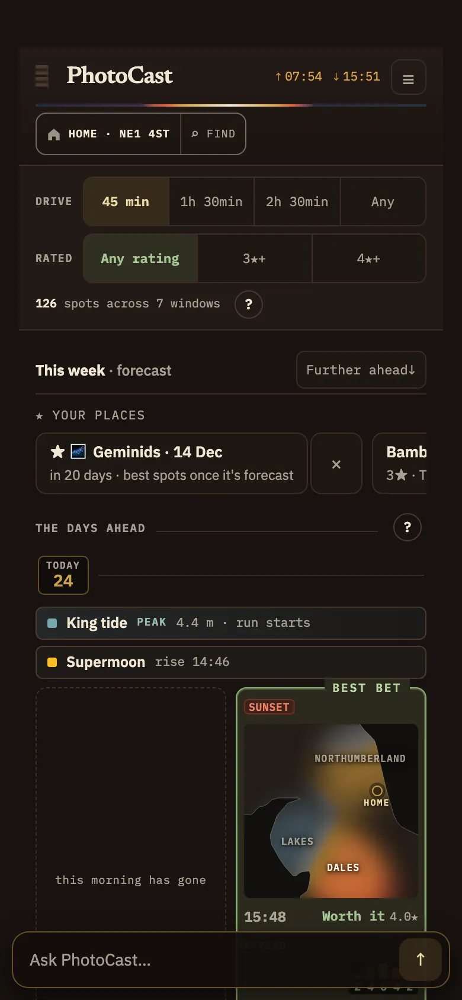
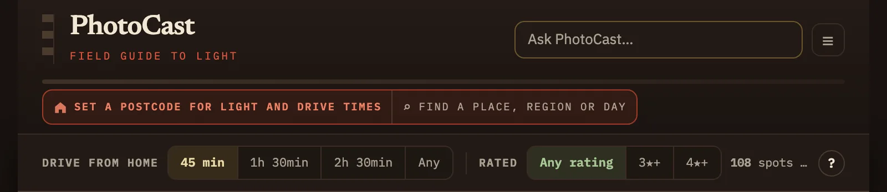
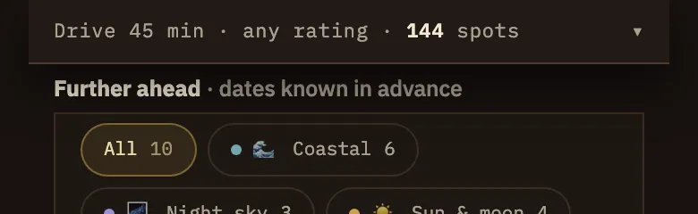
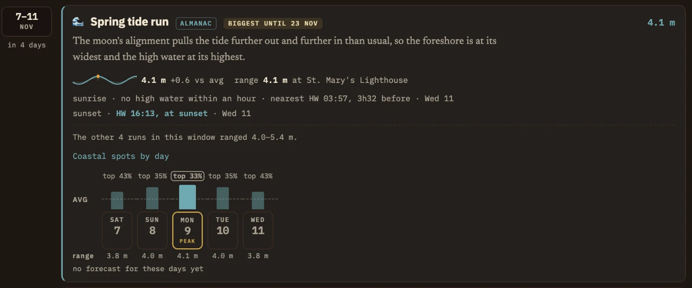
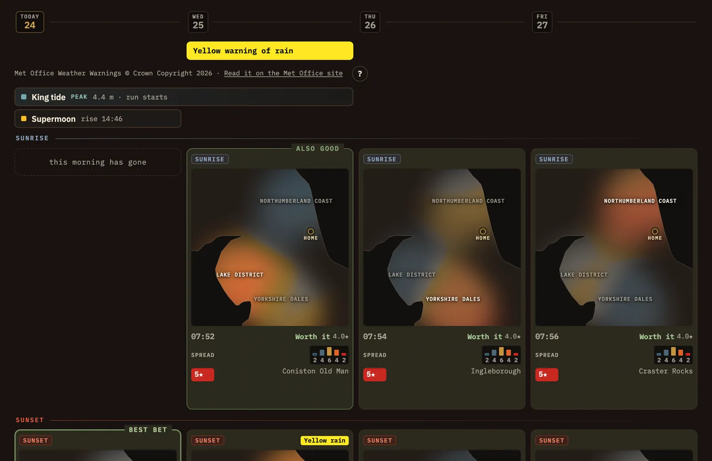

The one screen
Everything you plan from sits in one column that opens when you sign in, on a phone, a tablet or a computer:
- This week at the top: the next four days, one column per day, with a card for each sunrise and sunset. More on This week.
- Further ahead below it: dates in the next 90 days that are known in advance, such as big tides, supermoons and meteor showers. A Further ahead ↓ button in the This week heading takes you straight there. More on Further ahead.
- The map opens over the screen when you tap a card, a lane, a place or a result in Find. It has its own page: Map. Closing it, with ✕, Escape or your browser's Back button, returns you to the card you came from.
Settings, Change home postcode, the guide and Sign out are in the ☰ menu at the top right, on every screen size.

That gives the order most shoots are planned in. Your first five minutes walks through it: when (Further ahead), which morning (This week), where (the map) and go (the place's callout and its Leave by time).
The top of the screen
On a desktop or tablet, under the PhotoCast name you'll find the ⌂ home you're planning from, with today's blue hour and golden hour times for that place, labelled today. The coloured band above them traces the day's light, from blue through gold and back. On a phone the top is a single line: the PhotoCast name, ⌕ Find and the ☰ menu, with no times (a sunrise's or sunset's own blue hour and golden hour are in the map's header). Where you're planning from is named on the Drive bar below, and the ☰ menu has Plan from home again when you've chosen somewhere else.
- If you haven't set a home postcode yet, this shows Set a postcode (on a phone, as one slim line under the top, until you save one). It takes you straight to the right field in Settings.
- ⌕ Find (or ⌘K / Ctrl K) lets you jump to a day, a region, an area or a named place. See Finding places.
- The ☰ menu holds Settings, Change home postcode, the guide and Sign out. See Settings.
- When the northern lights are possible, an aurora banner appears here too.

Drive and rating
The bar under the top of the screen filters This week all at once. It stays in place as you scroll, and it is carried onto the map when you open a card.
Drive from home Pro
Choose how far you're prepared to travel: 45 min, 1h 30, 2h 30 or Any. Each sunrise and sunset summary then considers only locations within your selected drive time.
It starts at 45 minutes on weekdays and 2h 30 at weekends. If you change it, a today only tag appears with a Back to 45 min button, and it resets the next day. If you're planning from somewhere else, it reads Drive from Keswick, for example.
The filter uses your personalised drive times. On Lite the drive time buttons are greyed out and every location counts.
Rated
Hide anything below a rating: Any rating, 3★+ or 4★+. This works on Lite and Pro.
The end of the bar tells you what's left: a count such as 12 spots · 6 windows, or 12 of 20 spots within reach · 6 windows when the rating you chose hides some. It counts locations across the sunrise and sunset forecasts on the screen, so a place that looks good at both sunrise and sunset counts twice; the within reach words appear once you have a home postcode, because they name the set the 20 is counted from. The buttons beside the count already show your drive time and rating, so it does not repeat them. If your filters leave nothing, PhotoCast says so and offers a one-tap way out, such as widening the drive time or lowering the rating.
These filters belong to This week. Further ahead, below it, is not filtered by drive time or rating.
On a phone, the bar folds as you scroll
Once you scroll past This week, the bar shrinks to one line so it takes less of the screen: Drive 45 min · any rating · 6 spots ▾. Tap it to open the full bar where it is; it stays open until you scroll back to the top. Nothing on the page moves when it folds. The bar doesn't fold while you are using one of its buttons, and desktop and tablet never fold it.

This week
This week is the forecast: the next four days laid out as a grid. Its heading stays at the top of the screen as you scroll through it, with the Further ahead ↓ button at the right and the week's best beside it.
The week's best is PhotoCast's own Best bet, written in the heading: best Fri sunrise, Crimdon Beach 4★ →. The stars are that place's own rating for that sunrise or sunset, so they can be lower than the best rating on the card, which counts every place. Tap it and the map opens on that sunrise or sunset with the place's callout open. On a phone the words are shortened with an ellipsis, and the full sentence is what a screen reader reads. With no Best bet to show, as on Lite, the heading stays on its own. The ? beside it explains what fixed and could still move mean.
The grid has one column per day, with that day's sunrise and sunset beneath it. Above the grid sits your Your places row, if you use it. Event lanes run under the dates, and the sunrise and sunset cards sit under the lanes.
Your places rowPro
With Pro, a row of one-line chips sits at the top of This week: one for each place or area you have bookmarked, best first. A chip reads like Crimdon Beach · Fri sunrise 4★: its best sunrise or sunset in the days PhotoCast has forecast, with the stars. Tapping it opens the map on that sunrise or sunset, focused on the place. Where a place has nothing worth a trip, it comes last, reads quieter, and its chip opens the place's own sheet instead. Watched dates are not here: see Watch a date.
- The row scrolls sideways. On a phone it snaps from chip to chip.
- A chip's figures are the forecast's own. A bookmark never changes a rating.
- With nothing bookmarked or watched yet, a single line takes the row's place, once: Bookmark places and watch dates to build your plan. Its ✕ dismisses it, and your first bookmark or watch ends it for good, even if you later remove everything. See Your places.

ProOn Lite you see the same one-time line with a Pro tag, which opens a short explanation of bookmarks and watched dates. Dismiss it and it does not come back.
Event lanes and quiet days
The page is laid out as one column per day, with that day's sunrise and sunset beneath it.
Event lanes
Hot topics are notable photographic conditions and events, such as a spring tide, a cloud inversion or a supermoon. Under the dates you'll see them as lanes: one row for each event, placed under the day it falls on. An event that lasts several days is one lane that stretches across every day it covers. Each lane shows the topic, a key figure and sometimes a tag. For example, a spring tide might read "4.8 m · run starts" and a cloud inversion "dawn · 9/10". More on fixed and could still move.
- A dotted left edge means the event began before the first day shown. A faded right edge means it runs on past the last day shown.
- PEAK marks the biggest day of an event that lasts several days.
- Tap a lane to open the map on the first sunrise or sunset it covers, when it has one.
- A dated event that already has a lane here is not listed again in Further ahead, so each event appears once.
A day with no lanes simply has nothing special forecast.
Quiet days
When nothing on a day is worth a trip, PhotoCast folds it to a single line, such as Wed 25 · nothing above 2★ ▸. A day folds only when every sunrise and sunset it shows is rated 2★ or lower, and it has no weather warning and no watched date. A window that has not been rated yet never counts as quiet, so a day with one never folds. On Lite, where the ratings are hidden, no day folds.
- Tap the line to open the day where it is. The same line stays in place, shows ▾ while the day is open, and keeps focus. Days you open stay open until you leave the page.
- On a phone the folded line also counts the day's lanes, such as · 1 topic, so a cloud inversion or a mist is never hidden without saying so.
- On a larger screen the day's heading and its lanes stay where they are, and the line sits where the sunrise card would be.


Sunrise and sunset cards
Each card is one sunrise or sunset. It shows:
- the time of the sunrise or sunset and a verdict: Worth it, Maybe or Poor
- the best rating within your selected drive time
- the Spread: how many locations within your selected drive time have each star rating
- a small map of the area in the forecast colours, with a few place names so you can get your bearings
- a note when the forecast has changed since the last update
- on coastal days, how many coastal locations have their preferred tide level at sunrise or sunset, such as "∿ 4 on tide" Pro
Colours fade where the forecast's confidence is lower, which is often, but not always, on later dates. The lowest confidence is marked provisional.
The spread
The spread shows how the ratings within your selected drive time are shared out, from one star on the left to five stars on the right, with the number of locations under each bar. Bars that lean to the right mean much of the area looks promising. A short bar on its own at the right means only a few locations do.
A hatched bar on the far left counts locations not yet rated. The spread ignores the Rated filter, so it always counts every location within your drive time. When too few locations are rated to give a fair picture, the spread shows how many are rated instead, such as "3/12 rated".
Each card counts only the locations set up for that sunrise or sunset. Some locations are set up for sunrise, some for sunset and some for both. Woodland is forecast at sunrise only, when mist is most likely. This means the sunrise and sunset cards for the same day often count a different number of locations.
A location set up for sunrise only is never rated at sunset. It isn't hidden or given a low score. PhotoCast simply doesn't forecast it for sunset, so it doesn't appear anywhere in that sunset card's spread.
Opening a sunrise or sunset
Tap a card to open that sunrise or sunset on the map. The map opens over the screen with the sunrise or sunset already selected, your drive time and rating filters carried over, and, when you have a home set, the view framed to show your home and the best place together, with that place's callout open. A lane or a Your places chip opens the map the same way. The map has the regions, a ☰ List of the places for that sunrise or sunset, best first, and the callout for each one. Use ‹ and › in the map's header to step to the previous or next sunrise or sunset. ✕ closes the map and returns you to the card, and so does your browser's Back button.
The map has its own web address, in the form #map/2026-12-03/sunrise, so you can bookmark a sunrise or sunset or send it to someone. The address never carries your home or your filters.
Tap a location for its own forecast: every sunrise and sunset over the coming days, the times of blue hour and golden hour, and the tide if it's on the coast. If a Met Office weather warning covers that location, a chip beside the day gives its level and weather type. From there you can also open the same sunrise or sunset on the map.

ProRed Sky and Golden Hour scores, the tide at the light, and leave-by times worked out from your drive time are available with Pro.
Best betPro
PhotoCast picks one Best bet across the whole few-day forecast: a particular sunrise or sunset and a region, usually with a named location and a short reason. There is at most one Also good alongside it, for when a second option is also worth a look.
This week shows the Best bet on the card for that sunrise or sunset, naming the region. The map marks the same sunrise or sunset in its window control and shows the pick in that region's panel.
It's written from the same forecast as the ratings, so it's a quick way to narrow down the possibilities when several places look similar.
Planning from somewhere else
If you're away for a few days, you can plan from another region's base town instead of home. Open a location in that region and choose Plan from here. Drive times, the drive time filter and the sunrise and sunset times all switch to the new base.
To come back, use the home button at the top of the screen, labelled Plan from home again. While the map is open the same button is in its header.
Further ahead
Further ahead looks beyond what the weather forecast can see. It lists dates in the next 90 days that are known in advance, such as big tides, supermoons, meteor showers and eclipses, so you can plan for the dates worth photographing and note the ones that fall on a day off.
Entries are grouped by month, earliest first. Each one shows the date, how many days away it is, a title with its topic symbol, and a short description of why it's worth knowing about. The nearest entries start open, and the rest sit as one line with an Open button. The ▾ at the right of an open entry closes it, and Open all at the top opens every entry.
- Weather-driven topics such as valley mist and cloud inversions can't be known this far out, so they don't appear here. Once they're in the forecast you'll find them as lanes under the days in This week.
- An event that already has a lane in This week is shown there instead of here, so it never appears twice. An event inside the next few days with no lane stays in the list, tagged In next 4 days.
- To get here, scroll down, or press Further ahead ↓ in the This week heading.

Every topic
These are all the hot topics (notable photographic conditions and events) PhotoCast looks out for. The first group has dates known in advance, so they appear in Further ahead. The second group depends on the weather. You'll see those as lanes in This week and on the map once they're in the forecast.
Events with dates known in advance: in Further ahead
- 🌊 Spring tide
- Bigger tides for two or three days around each new and full moon, with higher high water and lower low water.
- 🌊 King tide
- The very biggest spring tides of the year, when the moon is also at its closest.
- 🌙 Supermoon
- A full moon near its closest point to Earth, so it looks a little bigger and brighter as it rises.
- ☀️ Equinox and solstice
- At the equinoxes the sun rises due east and sets due west, lining up with east- and west-facing views. At the winter solstice the sun stays low in the sky all day, which can produce long shadows and warm, directional light when conditions allow.
- ◐ Eclipse
- A solar eclipse visible from the region, with the times and how much of the sun is covered.
- 🌘 Lunar eclipse
- The moon passing through Earth's shadow, often turning a deep red.
- ☄️ Meteors
- The peak of a meteor shower, with dates from the International Meteor Organization's calendar. The date is fixed, but you need a clear, dark sky to see it.
- ✦ Noctilucent clouds (NLC)
- Thin, very high clouds that are lit by the sun from below the horizon on summer nights, often glowing electric blue low in the northern sky. The season is listed. Individual displays can't be forecast.
Weather-driven: lanes in This week, and the map
- 🌊 Storm surge
- Water levels rising above the predicted astronomical tide, pushed up by wind and low pressure. A surge is about water level, not wave size, though it can make high water more dramatic.
- ☁️ Inversion
- Cloud filling the valleys below the hilltops, so you can look down on a sea of cloud.
- 🌫️ Mist
- Valley mist at dawn, usually after a still, clear night.
- 🌁 Sea mist
- Mist or fog rolling in off the sea along the coast.
- 🏜️ Dust
- Saharan dust high in the air, which can deepen the colour of a sunrise or sunset.
- 🏔️ Snow on the tops
- Snow lying on the higher fells and hills, with the valleys clear.
- ❄️ Fresh snow
- Fresh overnight snow can simplify the landscape and cover existing tracks.
- ❄️ Snow and mist
- Snow on the ground with mist or low cloud, for soft, bright, low-contrast winter scenes.
- 🌤️ Clearance
- Skies clearing after rain or cloud, often with very clean air and long views.
- 🌸 Bluebells
- Bluebell woods in flower in spring. Filtering the map to bluebell woods needs Pro.
- 🌌 Aurora
- The northern lights are possible tonight. See Aurora and night sky.
New arrivals
As each day passes, new dates come into the 90-day window. When something notable arrives, the Further ahead ↓ button shows a small number, or ◆ for something rare, the Further ahead heading shows the same number, and a line appears at the top of the list naming the most notable arrival, for example "2 announced — the Geminids entered the window". Something exceptional is marked ◆ Rare.
Press Mark as seen to clear the number. Scrolling past it does not clear it. Most of the time there's nothing new, and the button stays quiet.
Filters
The chips above the list narrow it to one family of topics: All, 🌊 Coastal, 🌌 Night sky, ☀️ Sun & moon or 🏜️ Air & dust. Each shows how many entries it holds. Only one is on at a time, and the browser you are using remembers your choice for next time.

The key at the top, fixed and could still move, explains the two outline styles. More on what they mean.
Reading an entry
Each entry has the date, or the period of several days, on the left with how many days away it is. Beside that is the title with its topic symbol, the key figure on the right (such as "~150/hr" for a meteor shower, which is the shower's catalogue peak rate under ideal dark skies with the radiant overhead, so actual counts are usually far lower; or "5.0 m" for a tide, which is its range in metres) and a short description of why it's worth knowing about. For showers whose radiant stays low from the UK, such as the Eta Aquariids, the figure is the rate you can realistically expect here instead.
The tags beside the title tell you what kind of entry it is:
- Almanac
- An astronomical almanac entry: a date calculated in advance, such as a tide, a moon phase or an eclipse.
- Forecast · peak
- The expected peak of something that depends partly on conditions. It could still move.
- Biggest until …
- How long you'd wait for a bigger one. "Biggest until 21 Jan" means nothing larger arrives before then.
- In next 4 days
- It overlaps the days in This week, so the forecast already covers it.
Two events at once
When two events share a cause and land together, such as a king tide period on a supermoon, they're shown as one entry with a line for each. The description explains how they're linked.
Tide at the lightPro
Tide entries show how a period of big tides lines up with sunrise and sunset, day by day. PhotoCast checks whether high water falls within an hour of sunrise or sunset, and that is what "Tide at the light" means. Here's a spring tide period, piece by piece.

123456789- 1What kind of entry. ALMANAC means the dates are fixed. BIGGEST UNTIL tells you how long you'd wait for a bigger one.
- 2Peak tidal range. The tidal range on the biggest day of the period, in metres: the difference between high and low water at the named tide station.
- 3The tide at a glance. A small curve with sunrise and sunset marked as dots, then the range and how it compares with an average tide (+0.6 vs avg).
- 4Where it's measured. The range is measured at the named tide station.
- 5Sunrise and sunset. A line for each of sunrise and sunset, saying whether high water falls within an hour of it. If not, you get the nearest high water and how far off it is. A match is highlighted, as with HW 16:13, at sunset.
- 6Other periods. How this period compares with the others in the 90 days.
- 7Each day ranked. A bar for each day of the period against the dashed average line, with its rank for the year (top 33%). The biggest day is outlined.
- 8Day buttons. Tap a day to see the coastal locations for it. The peak day is marked PEAK.
- 9Range and forecast. The range on each day. Until a day is inside the forecast, the entry says no forecast for these days yet and there are no locations to show.
To use it, find the day where sunrise or sunset lines up with high water, then check that day in This week once it's inside the forecast. For a full breakdown of a single day's curve, see the Tide panel on the map.
ProThe tide at the light is available with Pro. On Lite the tide date and range are still listed.
Going further
Under each entry is a row of day buttons, labelled for what they'll show: Coastal spots by day, Dark-sky spots or All spots by day. The peak day is marked, and full moons are flagged.
- Once a day is inside the forecast, its button opens the map on that day with the matching locations shown.
- Until then the row says "no forecast for this day yet". Come back nearer the time, or watch the date and it will come to you.
Watch a datePro
Open an entry in Further ahead and press Watch this date. The button reads Watching while you are. PhotoCast shows Watching King tide · 3 Dec. It's at the top of Further ahead. with an Undo button. A watched date has one home at a time, and it moves as the date comes closer.
Before the date enters the forecast: Watching
The entry moves to Watching, a group at the top of Further ahead, above the filter chips. It is the same card, with the same panel and the same Watching button, and the filter chips do not hide it. It leaves its month while you watch it. If the date is already inside the forecast with a plan, the toast says It's on Fri in This week and the date is that day's lane instead. If PhotoCast stops listing a date you watch, Watching keeps a quiet row, King tide · no longer listed, with a Stop watching button. Further ahead ↓ in the This week heading shows how many dates you are watching, beside its New count, and "N watching" in its name.
Once the date is inside the forecast: a lane
The date becomes a lane on its day in This week, with the bookmark mark and the plan: King tide · 4.6 m over sunrise 07:54 · best Crimdon Beach 4★ · tide on the light →. Tap it to open the map on that sunrise or sunset, focused on the best place. For a tide period PhotoCast chooses the sunrise or sunset where the tide is on the light, and the higher-rated one if both are. If the day already has a lane for the same event, that lane takes the mark and the plan, and no second lane appears. A date with no sunrise or sunset of its own, such as a meteor peak, shows clear-sky check on the night and is not a button. If no sunrise or sunset in a tide period has the tide on the light, or a date that is not a meteor peak has no matching topic, there is no plan to show: a lane for the same event in that day's column still wears the bookmark mark (without a plan), and with no such lane the date stays in Watching.
Stopping and expiry
- Press Watching again to stop. You get Stopped watching and an Undo, and the card goes back to its month.
- A date stops showing once the event is over, and PhotoCast deletes the watch itself 14 days after the date it started.
- A tide period that PhotoCast reclassifies, for example from a spring tide to a king tide, or whose dates move by a few days, stays watched.
- The noctilucent cloud season cannot be watched. It is a season, not a date.
- Watched dates count towards the same limit as places and areas: 25 places and dates together. A twenty-sixth is refused with You can keep up to 25 places and dates. and nothing changes.
- Watching a date never changes a rating or a Best bet, and it is private to you. More on your places.
ProWatching a date is available with Pro. On Lite the Watch this date button carries a Pro tag, and pressing it explains what it adds.
Finding places and areas
Choose ⌕ Find at the top of the screen, or press ⌘K (Ctrl K on Windows and Linux). Picking a place opens its next-days sheet. Picking an area, either a named area such as Hadrian's Wall or a sub-region, opens the area sheet: its spots, each with its own best window, best first. Each spot opens its own sheet, and Show on map → at the foot opens the area on the map. An area sheet lists the spots' own ratings and never gives the area a verdict. More on Find.
ProBookmarked places and areas, the bookmark button in the sheet headers and a bookmark mark beside a bookmarked place in the best-spot line are available with Pro. A bookmark never changes a rating or the Best bet. More on your places.
Weather warnings
When the Met Office has a weather warning in force for somewhere PhotoCast forecasts, it appears on this screen in up to three places, and in full on the map. A warning never changes a rating, a verdict or a Best bet: it sits beside them. See Weather warnings for what the levels mean.
- Warning lanes in This week. They come first, above the event lanes. Each lane is one warning, stretched across the days it applies to, with its level as a word, its weather type and Updated if the Met Office has issued a newer version. Tap a lane to open the first sunrise or sunset it covers on the map.
- A marker on the card. A card shows the strongest warning that applies to that sunrise or sunset as the level word and the first weather type, for example Amber snow +1, where +1 is one more warning. The lanes above the cards give the full wording.
- An entry in Further ahead. A warning that reaches beyond the days in This week has its own entry on the day it starts, tagged Met Office warning. A warning that falls wholly inside the days in This week is shown there instead. The entry names the level and weather type, with Updated if the Met Office has issued a newer version. If the level has gone up in the last 24 hours it also says Raised from Amber (or whichever level it was), and a raised warning is listed first on its day. Open the entry for the warning in full. A warning entry has no filter chip of its own, so look for it under All.
For the full warning, open that sunrise or sunset on the map and press Details beside the warning's chip: the headline, what to expect, what to do, when it is valid and how many places in each area it covers, with the Met Office's likelihood and impact matrix (more on the map).

Under the lanes a small line credits the Met Office and links to its warnings page. If PhotoCast has not been able to check the Met Office lately, that line, and a line at the top of Further ahead, say when it last did, and what you see may be out of date. Nothing here ever means "no warnings": the lack of a warning is not an all-clear, so check the Met Office before you travel.
Tips
- Start with the verdicts on each card, then open only the ones marked Worth it or Maybe.
- Leave the drive time at its default during the week and widen it when you have a free day.
- A hot topic on a Worth it sunrise, such as a spring tide on the coast or an inversion in the Dales, is often the combination worth driving for.
- Look at Further ahead once a week and note the dates that fall on a day off. Watch the ones you want: they sit in Watching at the top of Further ahead, and turn up as a lane in This week when they come into the forecast.
- A spring tide that lands on a sunrise is worth planning around. The tide panel on the map shows exactly where the water will be.
- Meteor shower peaks are fixed, but whether you'll see anything depends on the cloud. Look again when the date reaches This week.